Polling station VR simulation instructional guide
Voting simulation in virtual reality
Why a VR Environment?
About this Guide
This guide shows how to set up the complete VR voting simulation, made with Unreal Engine, on your computer. It is a comprehensive tutorial: you may have to open a lot of tabs and make your own decisions along the way, but it should help you with most of the steps.
Pictures, explanations, tips and notes run down the middle column; the steps to follow, the figure titles and the definitions sit beside them in the right-hand column (below them on a phone). Click a picture to enlarge it. Underlined terms open a definition in the margin, and the glossary at the end collects them all.
The Polling Station
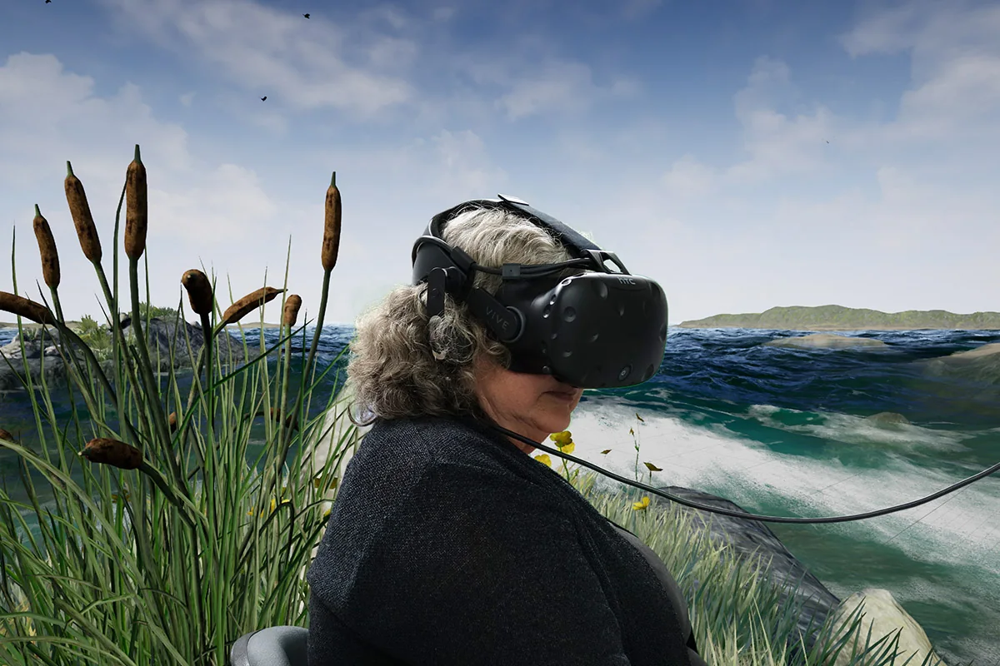
For this project, we are creating a virtual simulation of a school gymnasium to replicate a voting station environment. The primary goal is to study how people navigate the voting process using signage, focusing specifically on the effectiveness of different signage layouts in a polling station.
It is a flexible, editable 3D environment that can be used by anyone, anywhere. We will be experimenting with various signage placements. Each sign is printed on letter-sized paper and includes both iconography and informational text. Some of these signs are accompanied by directional arrows, also printed on letter-sized paper, mounted on standing sign boards positioned next to the main signs to reinforce their guidance.
A human user will experience the environment firsthand, so achieving a realistic and immersive setting is essential.
Choosing the Engine
1.1Unity or Unreal Engine
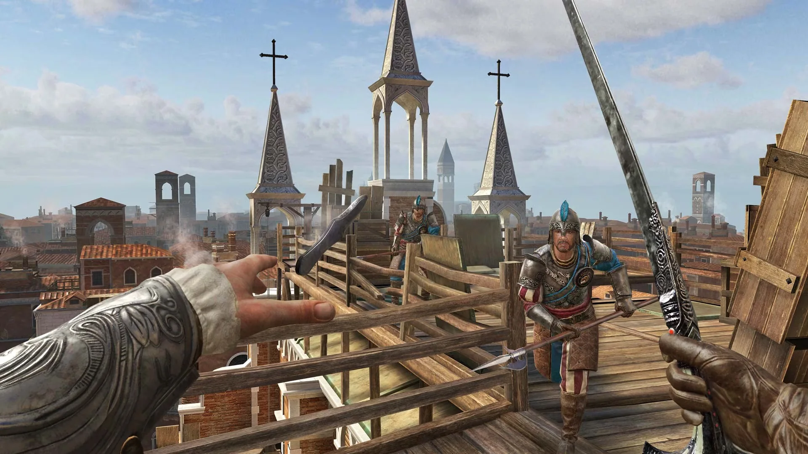
Before starting development, it is essential to identify the target platform or device for your VR simulation or game. Different game engines offer varying levels of performance, support, and compatibility with specific hardware. When building a 3D VR environment, Unity and Unreal Engine are the two most widely used platforms.
One key consideration is the programming language each engine uses. Unity relies primarily on C#, while Unreal Engine uses C++. If you are not familiar with coding, this can significantly influence your choice. We chose Unreal Engine (UE) because it offers a powerful alternative to traditional coding: the Blueprint visual scripting system. Blueprints allow users to create complex logic using a node-based interface without writing code, making UE more accessible for non-programmers. Unity has a comparable node-based tool, Unity Visual Scripting (formerly Bolt, built into the editor since Unity 2021.1), but it is less widely used; most Unity tutorials and VR toolkits still assume C# (Unity Technologies).
Another critical factor is visual fidelity. Unreal Engine is generally known for its higher-quality graphics out of the box, making it a strong candidate for simulations where realism and immersive visuals are important, such as our voting environment scenario.
1.2Nanite
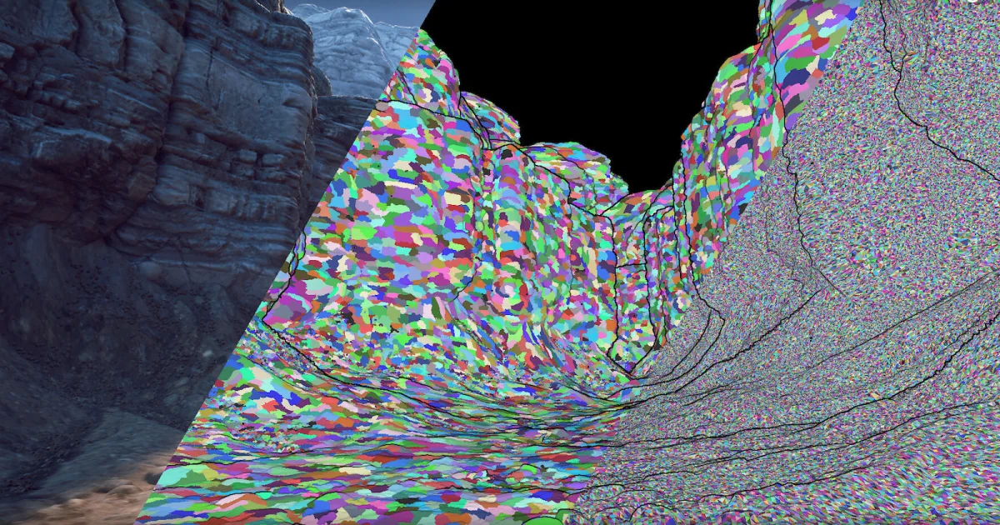
Unreal Engine stands out as the most suitable choice for our VR project due to its combination of powerful features, ease of use, and high-quality visual output. Two of the major technologies that set UE apart are Lumen and Nanite.
Nanite is UE’s virtualized geometry system that allows artists to import film-quality assets with millions of polygons directly into the engine without the need for optimization or manual Level of Detail (LOD) setup. It intelligently streams and renders only the detail visible to the camera, drastically improving performance while maintaining extremely high visual fidelity. This means we can create realistic, complex environments without putting a heavy load on the system.
1.3Lumen
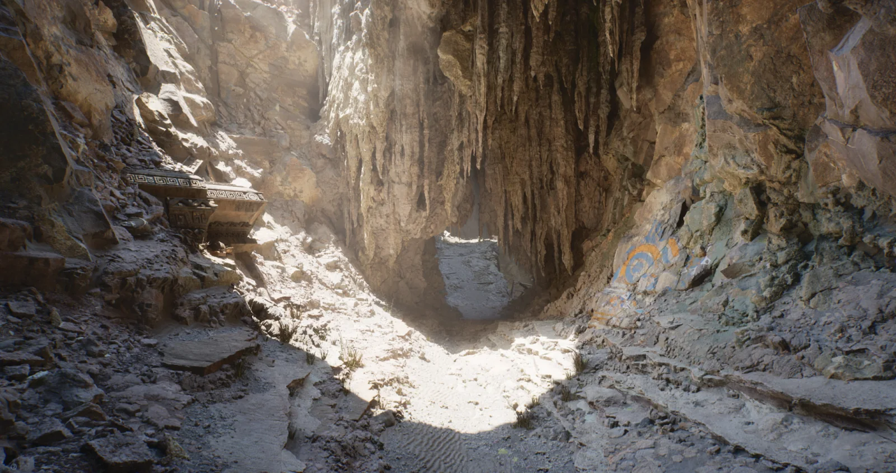
Lumen is UE’s global illumination and reflections system, which allows real-time lighting updates. It reacts dynamically to changes in light, movement, or geometry, meaning we do not need to spend hours baking lighting. Lumen helps achieve lifelike lighting, shadows, and reflections, contributing significantly to realism, which is especially important in immersive VR experiences.
Together, Nanite and Lumen bring a high level of realism to large or open environments while sparing you hand-made LODs and long lighting bakes. Both are demanding on the graphics card, though, which matters in VR.
Nanite and Lumen were designed for flat screens first. In VR (stereo) rendering, Lumen is still experimental: it costs a lot of GPU time at 90 FPS and can show artifacts in one eye. Test the scene in VR Preview (section 6.11), and if the frame rate drops or one eye flickers, switch to baked lighting.
1.4Blueprints and the Verdict
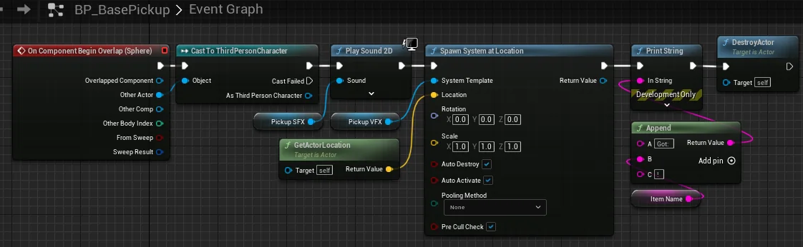
Moreover, Unreal Engine offers Blueprints, a visual scripting system that allows us to build complex interactions without writing traditional code. This lowers the learning curve significantly while still enabling powerful logic and behaviors.
To learn Blueprints, start with Epic’s Introduction to Blueprints (Epic Games), then build a first graph with the Blueprints Quick Start Guide (Epic Games). The Nodes page explains the building blocks seen in Figure 1.5 (Epic Games), and Blueprint Best Practices helps once your graphs grow (Epic Games).
Because of these advantages (no coding requirement, superior graphics, real-time lighting, and excellent support for Meta (Oculus) devices), Unreal Engine clearly wins the comparison. Our available headsets include the Oculus Rift, Meta Quest 2, and Meta Quest 3, and UE integrates seamlessly with all of them. Therefore, we will proceed with Unreal Engine for the development of our VR voting environment.
System Requirements
2.1Computer Hardware & Software
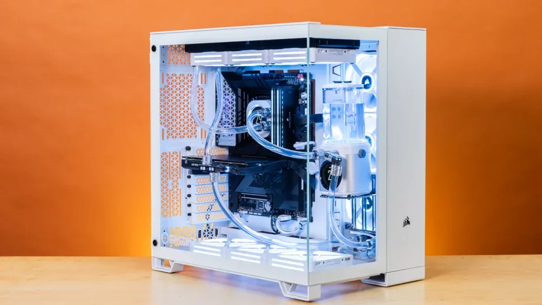
Creating and running a VR simulation is significantly more demanding than traditional 3D applications because it requires rendering two high-resolution views simultaneously, one for each eye, at high frame rates (typically 90 FPS or more) to ensure a smooth and comfortable experience. Any lag, stuttering, or dropped frames can break immersion and even cause motion sickness for the user. A powerful computer with a high-end CPU, GPU, and sufficient RAM ensures that the environment runs smoothly, assets load quickly, and real-time interactions remain responsive. Moreover, during development, a strong system reduces compilation and rendering times, allowing creators to iterate faster and test changes efficiently. In short, good hardware is not just about performance; it is essential for stability, realism, and user comfort in VR.
To maintain smooth performance in VR, especially in real-time interactions, it is critical to balance visual fidelity with performance. Poor optimization can result in lag, stuttering, or even crashes during the simulation. Therefore, maintaining reasonable texture resolutions, minimizing unnecessary asset duplication, and ensuring proper Level of Detail (LOD) usage are essential practices. Compatibility between Unreal Engine, your VR headset (such as Meta Quest, HTC Vive, or Valve Index), and any SDKs or drivers is also crucial for a stable experience. Epic publishes the minimum and recommended specifications on its hardware and software page; compare them with your computer (Epic Games).
2.2VR Headset
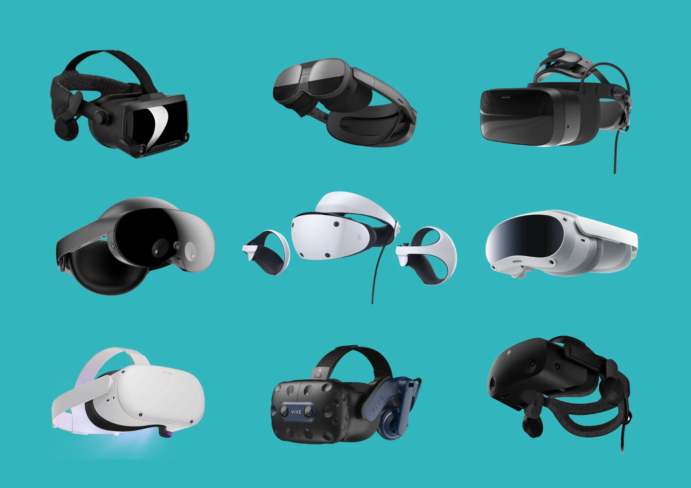
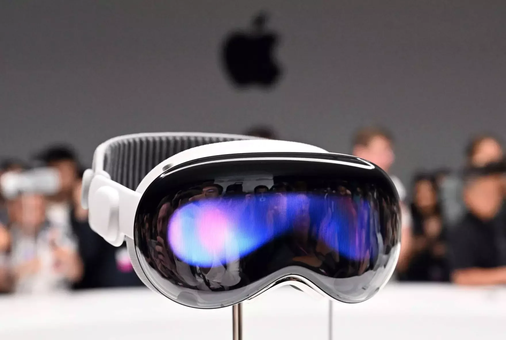
When selecting a VR headset for simulation development, it is important to consider both hardware capabilities and software compatibility. Key factors include:
- Tracking system. Look for 6DoF (six degrees of freedom) tracking, which allows full positional and rotational movement. Inside-out tracking (e.g., the Meta Quest series) is more portable, while outside-in tracking (e.g., Valve Index with base stations) can offer higher accuracy.
- Display quality. High resolution and refresh rate (ideally 90 Hz or more) are crucial for realism and comfort, reducing motion blur and eye strain.
- Field of view (FoV). A wider FoV enhances immersion by giving a more natural viewing experience.
- Comfort & ergonomics. Especially important for longer testing sessions: consider weight distribution, adjustability, and headset padding.
- PC compatibility & SDK support. Ensure the headset works well with Unreal Engine via OpenXR, SteamVR, or proprietary plugins like the Meta XR Plugin.
- Wireless vs. wired. Wired headsets generally offer better performance and stability, while wireless headsets provide more freedom of movement but may introduce latency.
- Developer tools & community support. Headsets with strong developer ecosystems (e.g., Meta, HTC, Valve) often come with better documentation, tutorials, and asset support.
Ultimately, the right headset should align with your simulation’s technical needs, your development workflow, and the target user experience.
2.3VR Cable
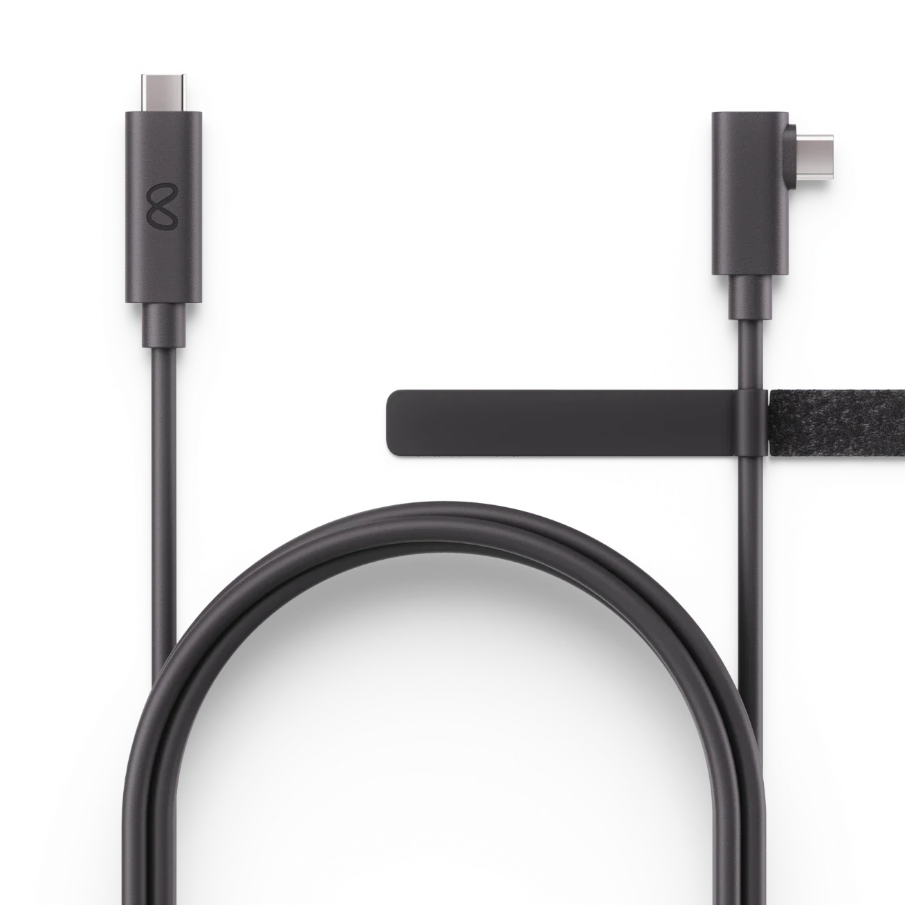
A high-speed VR cable is responsible for transmitting large volumes of data between the computer and the VR headset in real time. This includes high-resolution video, audio, and sensor input data (like head and hand tracking). Using a high-bandwidth cable ensures:
- Low latency. Reduces the delay between movement and visual response, which is critical for immersion and motion comfort.
- High frame rates & resolution. Supports the demanding video output required by modern headsets (often dual displays at 90+ FPS).
- Stable data transfer. Prevents interruptions or lag during gameplay or simulation, especially when streaming large scenes or high-fidelity assets.
- Power delivery. Some cables also power the headset, making reliable current flow essential.
For example, headsets like the Meta Quest 2 or Quest 3 running PC VR over a cable (Quest Link) require a USB 3 (USB-C) cable capable of 5 Gbps or higher speeds; Air Link, the wireless alternative, needs a fast Wi-Fi router instead. A lower-quality or slower cable may result in degraded visuals, audio dropouts, or disconnections. Meta sells a dedicated Quest Link Cable (Meta Store).
2.4Optimization Best Practices
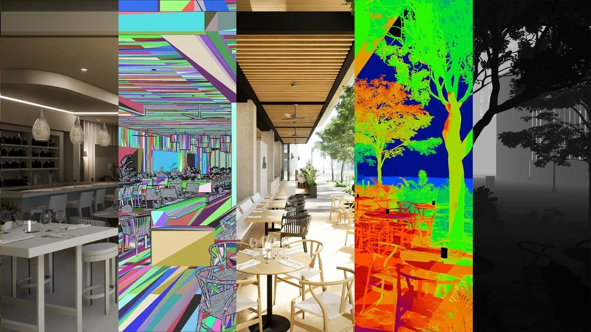
When developing and running a VR simulation in Unreal Engine 5, system requirements depend heavily on the scale of the environment and how well assets are optimized. Larger environments and high-resolution textures require significantly more computing power, especially GPU resources. If assets are duplicated without optimization, the project size increases, leading to slower load times and a heavier system load overall.
The checklist in Table 2.1 brings the requirements of this chapter together.
2.5VR Development System Requirements Checklist
| Item | Requirement |
|---|---|
| Core hardware | |
| CPU | Intel i7 / AMD Ryzen 7 or higher |
| GPU | NVIDIA RTX 3070 or higher (RTX 3080/4090 recommended for high-fidelity environments) |
| RAM | Minimum 16 GB (32 GB recommended) |
| Storage | SSD with at least 1 TB free space |
| Power supply unit | Sufficient wattage to support the GPU and peripherals (PSU) |
| Cooling | Proper cooling solution for sustained performance |
| Software compatibility | |
| OS | Windows 10/11 (64-bit) |
| Unreal Engine 5 | The project’s engine version installed (section 3.4) |
| VR SDKs / plugins | Compatible SDKs and plugins (e.g., SteamVR, Meta XR Plugin, OpenXR) |
| Graphics drivers | Updated NVIDIA/AMD drivers |
| Headset drivers | Correct runtime for your VR headset installed and configured |
| Display & output | |
| Monitor | High-resolution display for editing (1440p or 4K ideal) |
| Ports | HDMI/DisplayPort for headset connection |
| USB ports | At least 3× USB 3.0 / USB-C ports (for headset, tracking sensors, and accessories) |
| VR headset | High resolution, minimum 90 Hz refresh rate |
| VR cable | 5 Gbps and 10 ft+ in length |
| Optimization best practices | |
| Scale | Environment scaled appropriately for performance |
| Textures | Textures optimized (no unnecessary 4K textures) |
| Repeated assets | Instanced/static meshes used for repeated assets |
| LOD | Level of Detail settings applied to complex meshes |
| Lighting | Lighting baked or optimized for real time |
| Testing | Project tested in VR Preview before packaging |
Setting Up the Computer
3.1Create a Consistent Set of Credentials
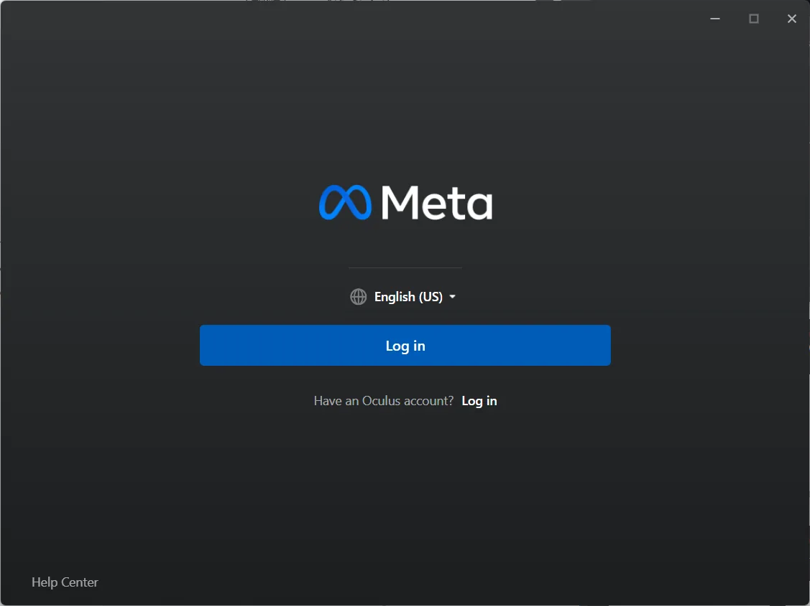
Decide on a dedicated email address that you will use across all platforms and software required for VR development. Choose a strong password (at least 12 characters long) with numbers and special characters, even if some platforms do not enforce it.
This username, email address, and password combination will be referred to as your credentials throughout this guide.
Use the same credentials across all accounts to avoid confusion.
Write your credentials down and keep them in a secure place for reference.
3.2Install Essential Software
- Download and install the Meta Quest Link PC app. Log in using your credentials.
- Download and install Steam (what is Steam?). Log in using your credentials.
- Download and install your GPU’s driver update software (e.g., the NVIDIA app, formerly GeForce Experience, if you are using an NVIDIA GPU).
- Download and install SteamVR. This is only necessary if you run the simulation through SteamVR, as this guide does with the Meta Quest 2 (Chapter 06).
- Download and install the Epic Games Launcher (what is it?). Log in using your credentials.
Use your credentials to sign up and log in to each application.
3.3Prepare the VR Headset
- Turn on the headset and put it on.
- Complete the initial setup process.
- Log in using your Meta account credentials.
- Ensure the headset has the latest software updates installed.
- Confirm that the VR controllers have charged batteries.
- Check that the high-speed VR cable is properly connected and that your PC recognizes the headset in the Meta Quest Link app.
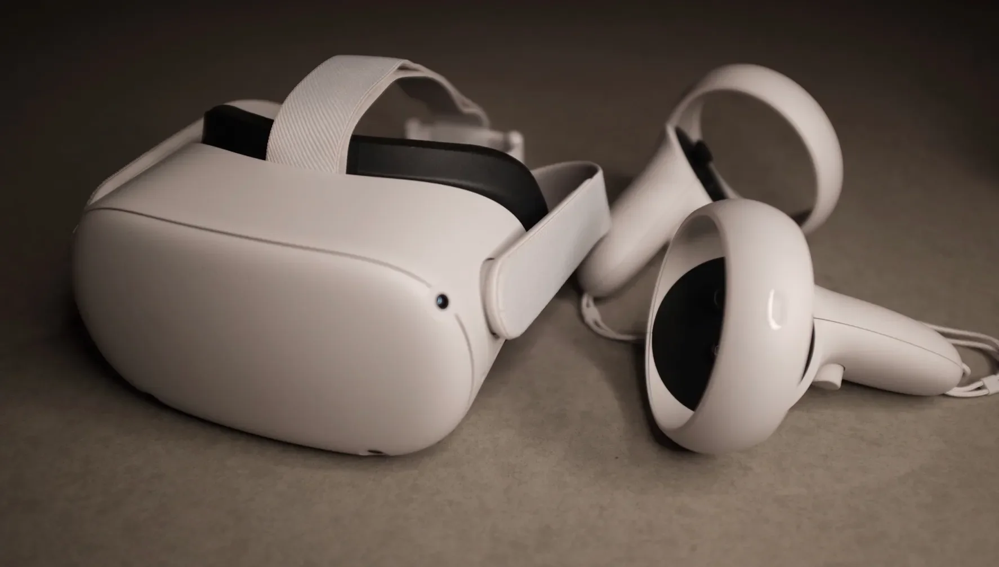
3.4Install Unreal Engine via Epic Games Launcher
- Open the Epic Games Launcher.
- Click on the Library tab.
- If you do not know your project’s Unreal Engine (UE) version:
- Go to your project folder.
- Open the .uproject file in a text editor.
- Search for the
"EngineAssociation"field. - The value (e.g.,
"5.2"or"4.27") is your UE version.
- Back in the Epic Games Launcher:
- Click the + icon next to Engine Versions.
- Choose the matching version number from the dropdown menu.
- Click Install.
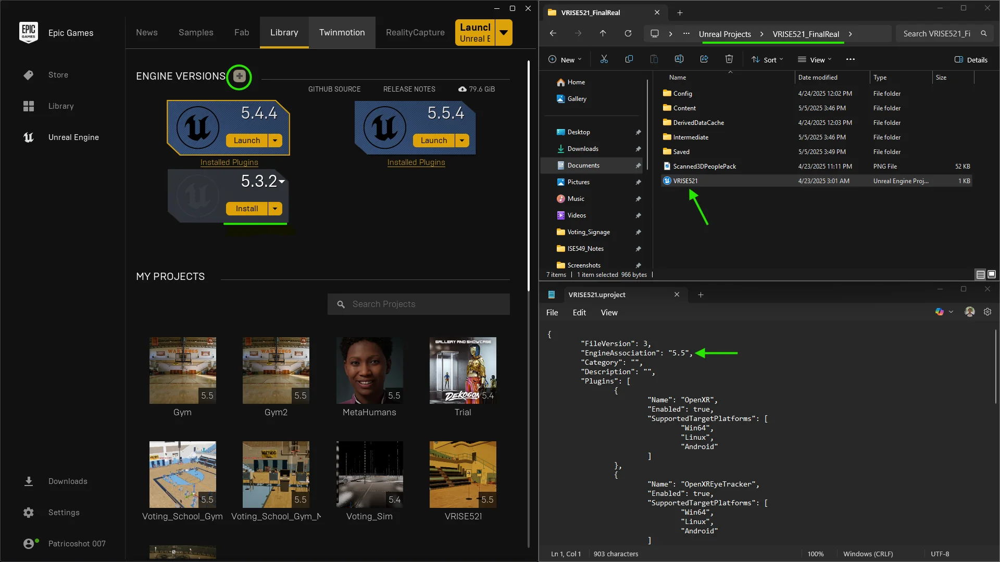
The installation process may take up to an hour, depending on your internet speed and system performance. Unreal Engine 5 requires at least 30 GB of storage for the base install. Additional plugins, assets, or templates will increase this size.
Once Unreal Engine finishes installing, your one-time setup is complete!
Before You Start
4.1Establish a Clear Naming Convention (Nomenclature)
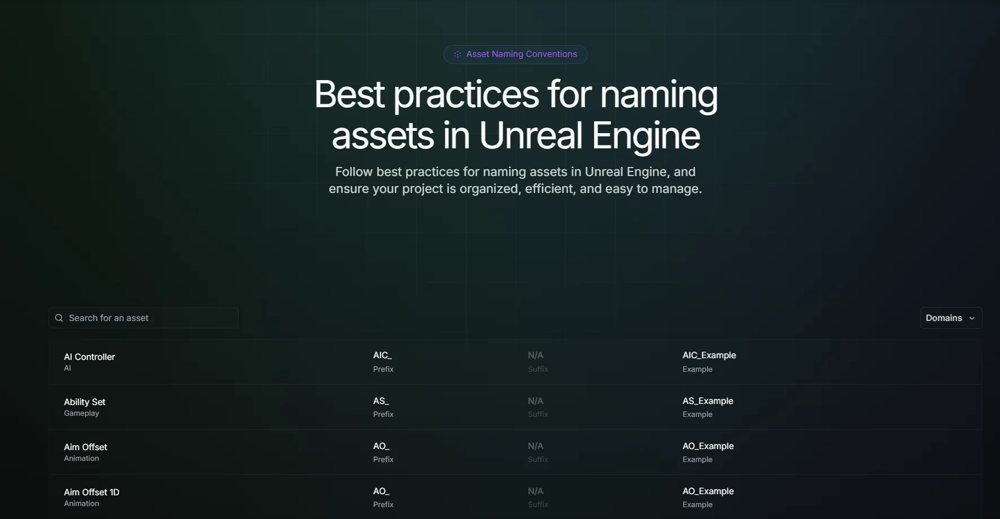
It is essential to develop a consistent file and object naming convention right from the beginning. VR environments often contain hundreds of assets, making it difficult to locate and manage objects without organized names.
Naming conventions help with searching and selecting multiple objects using the search tool, streamlining collaboration within a team, and ensuring consistency across platforms and file formats (Unreal Directive).
Use standardized prefixes like SM_ for Static Mesh, M_ for Material, BP_ for Blueprint, etc. Epic lists the full set in its recommended asset naming conventions (Epic Games).
4.2Set Up a Logical Folder Hierarchy
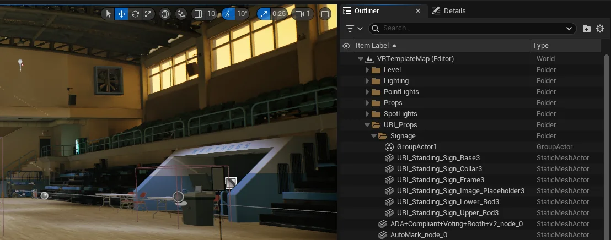
Keep all project files (models, textures, blueprints, references) in a single master folder. Within that folder, create a structured hierarchy (e.g., /Assets, /Maps, /Textures, /Blueprints).
Doing so enables easy navigation, searchability, team collaboration, file sharing, backup, and version control.
4.3Define Project Expectations & Make Early Decisions
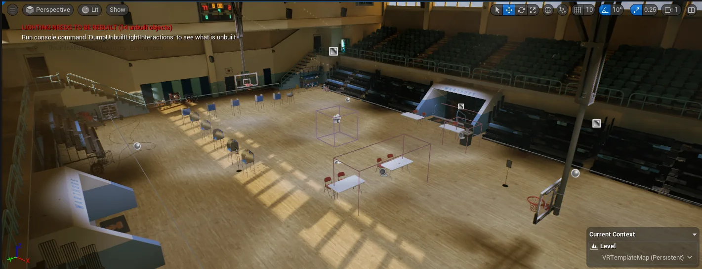
Before starting development, clearly define the scope of your project. Ask: what is the core objective of this simulation? Stick to the essentials. It is easy to get sidetracked by exciting ideas, but too many features can lead to wasted time, lost focus, and performance issues (scope creep).
Start with a minimum viable product (MVP). Refine later if time and resources allow.
If you are not ready to plan extensively, it is okay to experiment or explore to get familiar with the tools, but always come back to your project goals.
4.4Plan Before Executing
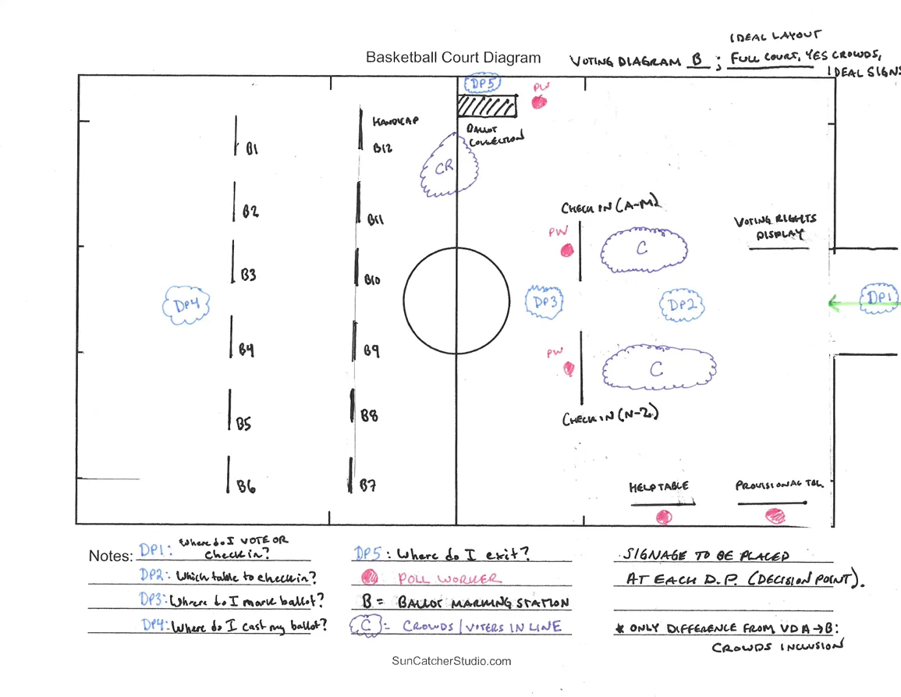
Layout planning is crucial before diving into Unreal Engine. In our case, this means planning the placement of elements like voting booths, tables and chairs, ballot collection stations, signage, and direction markers.
Instead of immediately jumping into 3D modeling, use 2D tools like Adobe Illustrator, Figma, or even pen and paper.
Sketch the basic floor plan quickly; it is much faster to iterate on paper or in 2D software. Planning in 2D saves time, effort, and computing resources, especially if your computer has limited power. Once the layout is ready, you can drag and drop assets into place in Unreal Engine using the plan as a guide.
Think of it this way: moving an object in a 2D sketch takes milliseconds. In 3D, it might take several minutes, especially on slower machines.
Importing the VR Project Folder into UE
5.1Locate the Unreal Projects Folder on Your Computer
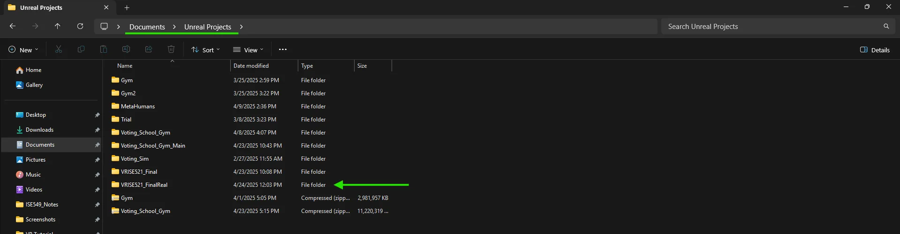
By default, Unreal Engine saves your projects in:Documents › Unreal Projects › [Your Project Name]
If you have chosen a different save location, look for a folder named “Unreal Projects.” It will contain all your project folders that appear under My Projects in the Epic Games Launcher.
5.2Copy the Project Folder into the Unreal Projects Directory
- Paste the entire project folder (the one you received or downloaded) into the Unreal Projects folder.
Example folder structure:Documents › Unreal Projects › URI_Votes_Final
Make sure the folder contains a .uproject file. That confirms it is a valid Unreal project.
5.3Restart the Epic Games Launcher
- Open the Epic Games Launcher (or restart it if it was already running).
- Navigate to the Library tab.
- Your imported project should now appear under My Projects.
5.4Open the Project
- Double-click the project thumbnail to launch it.
- Unreal Engine may take several minutes to open the project as it prepares support files, loads assets, compiles shaders, and applies environment settings.
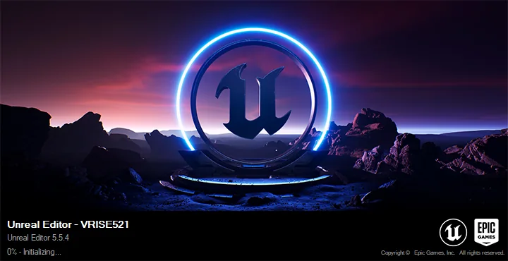
This process may vary depending on your system’s performance.
5.5Wait for Texture and Lighting Compilation
- Once the project opens in the UE Viewport, Unreal will continue to compile shaders and prepare textures in the background.
- Wait until the “Compiling Shaders” progress notice in the bottom-right corner disappears before you start working.
5.6Sharing or Transferring the Project to Another Computer
If you need to copy or move the project to a different machine:
- Copy the entire project folder (e.g., VRISE521).
- Optional: compress the folder into a .zip file. This can make transfers faster and easier.
- Paste the folder into the Unreal Projects directory on the new computer.
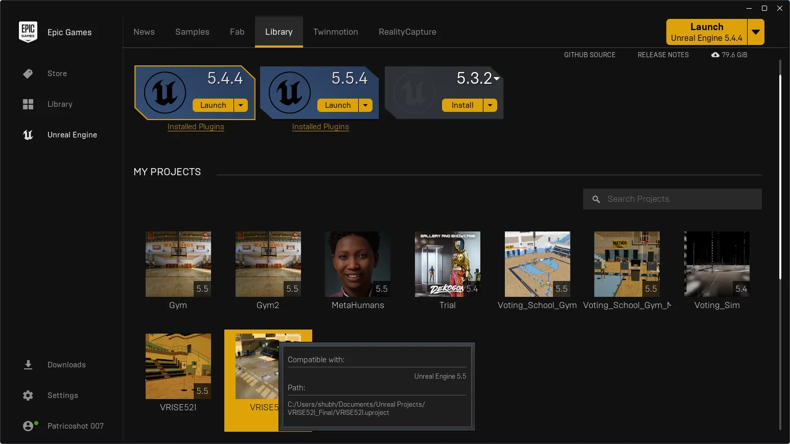
Always verify that the new system has the same Unreal Engine version installed.
A USB drive formatted as FAT32 cannot hold a single file larger than 4 GB. If the .zip file is bigger than that, copy the folder uncompressed or reformat the drive as exFAT.
Launching the VR Simulation in UE
6.1Prepare Your Meta Quest 2 Headset
- Turn on your VR headset.
- Ensure the battery is sufficiently charged.
- Insert charged batteries into the VR controllers.
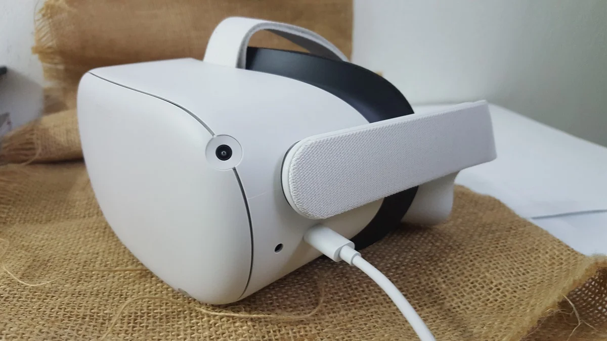
6.2Connect the Headset to Your PC
- Plug one end of the high-speed VR cable into the headset (preferably the 90° angled end).
- Connect the other end to your computer’s fastest USB-C port for optimal performance.
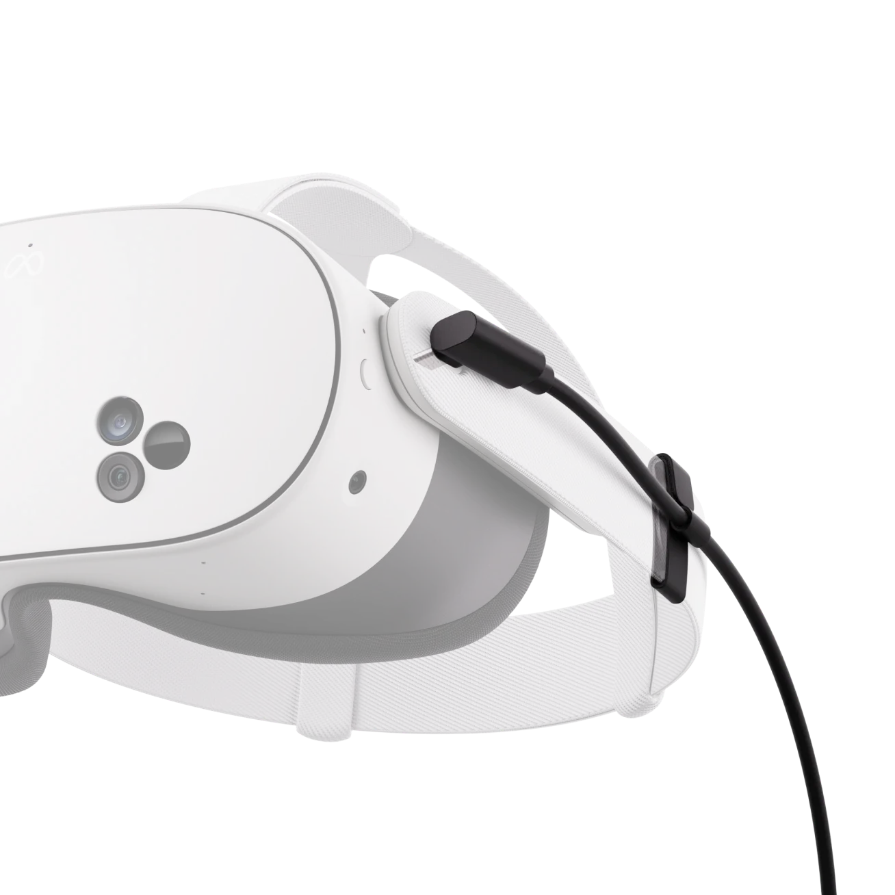
6.3Wake the Controllers
- Press any button on each controller to wake it up.
- Ensure they are powered and responsive.
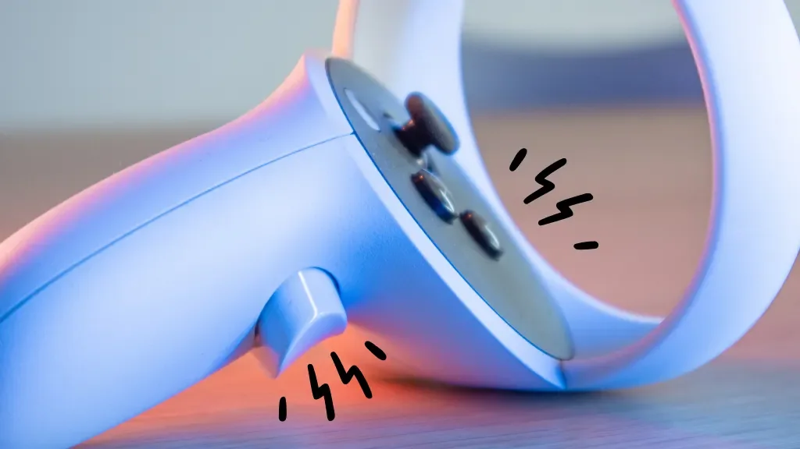
6.4Put on the Headset and Set the Boundary
- Wear the headset and follow the on-screen instructions.
- Set up a stationary boundary.
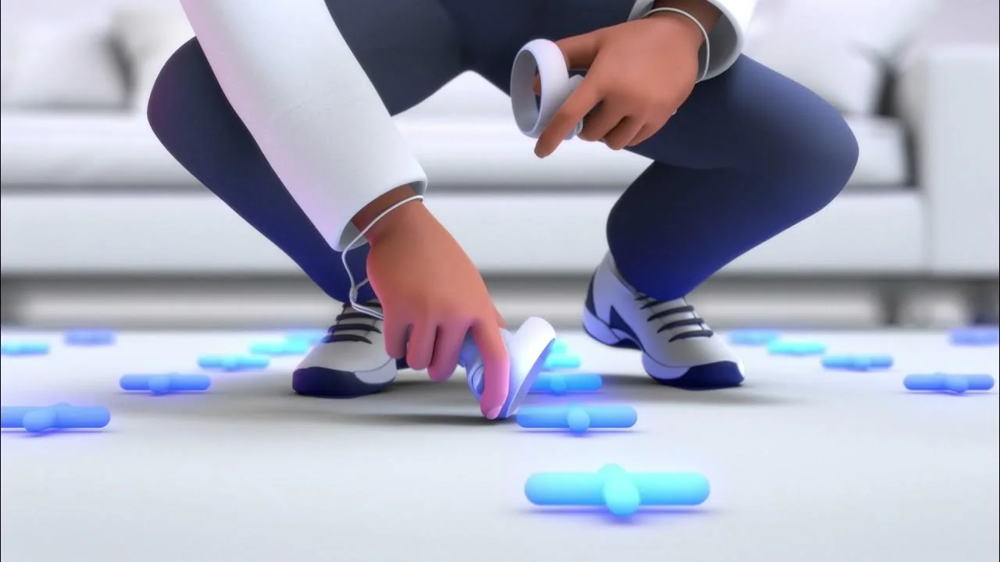
It is recommended to sit on a swivel chair during the experience.
6.5Launch the Meta Quest Link App
- Open the Meta Quest Link desktop application on your computer.
- You should see your headset listed and marked as “Connected,” but with a red cross.
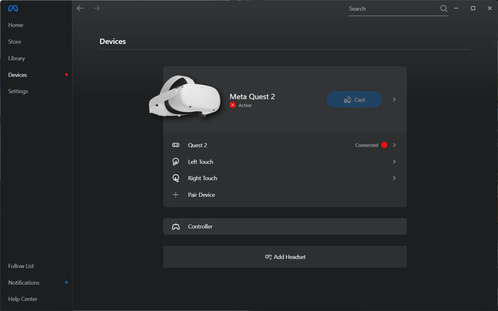
6.6Enable Quest Link Mode
- Inside the headset, open the notifications menu.
- Tap to enable Quest Link (what is Quest Link?).
- The view will shift from the Quest Home environment to the PC Link environment.
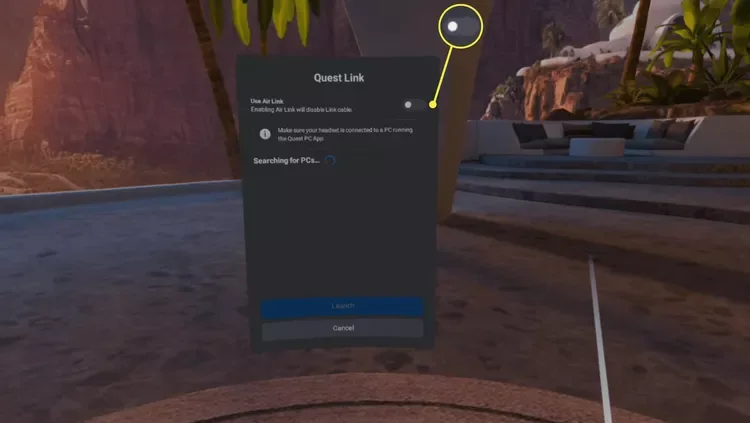
6.7Verify the Connection
- Remove the headset and check your Meta Quest Link app.
- It should now display “Connected.”
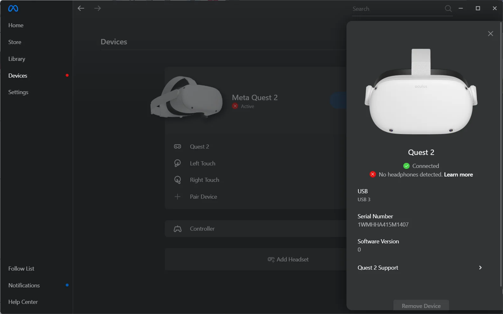
6.8Launch SteamVR
- Open the Steam application on your PC.
- Go to the Library, find SteamVR, and click Play.
- A small SteamVR status box will appear on your screen.
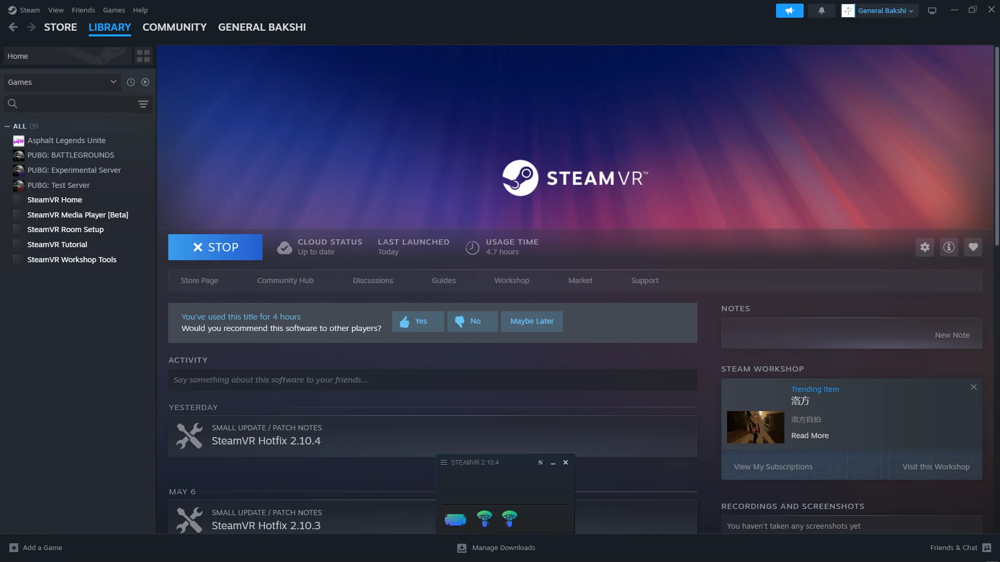
6.9Confirm SteamVR Connection
- Wait for the headset and controller icons to turn green in the SteamVR status box.
- If you are wearing the headset, you should now be inside the SteamVR environment.
- You can interact with the space: try using the right controller to paint in 3D.
6.10Open the Unreal Engine Project
- Bring up the Epic Games Launcher.
- Navigate to your project in the Library tab and open it.
- Wait for the Unreal Engine viewport to fully load.
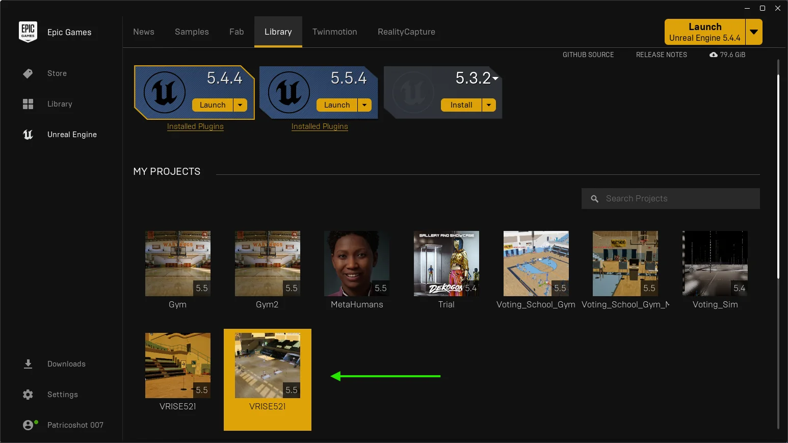
6.11Enter VR Simulation Mode
- In the Unreal Engine toolbar, click the ⋮ menu (Change Play Mode and Play Settings) beside the green Play button.
- Select VR Preview.
- A new window will appear, showing what the VR user is seeing inside the headset.
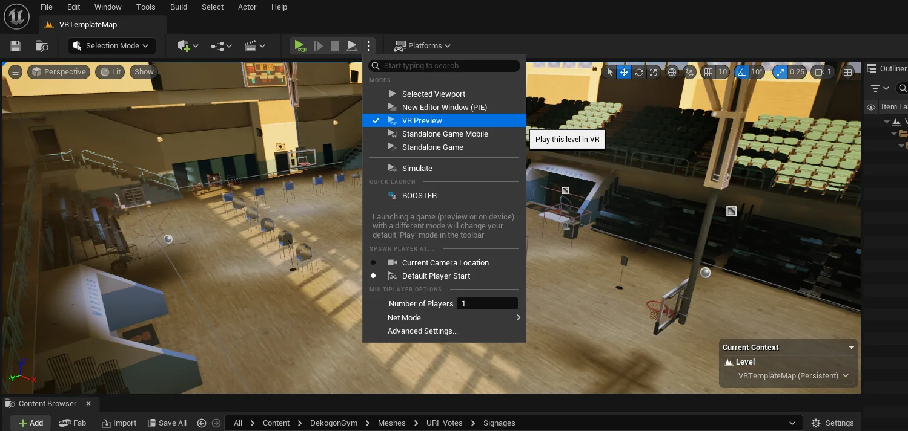
6.12Explore the Environment
- Put on your headset.
- Use the right joystick to move around and look freely within the virtual space.
- Press the Esc key on your keyboard to exit VR Preview mode.
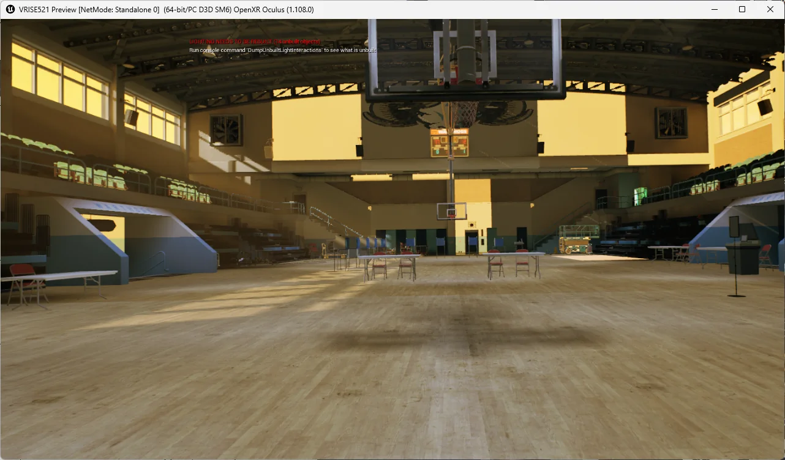
Steps 6.1 to 6.12 must be completed in order each time you run the simulation. Missing a step will not cause harm but might lead to connection or performance issues. If that happens, simply start over from step 6.5; it usually takes just a few extra minutes.
Importing 3D Assets into UE
7.1Understand File Format Compatibility
Before creating or importing assets, check the export/import file format compatibility between your 3D modeling software and Unreal Engine.
The .glb format (the binary form of glTF, the GL Transmission Format) is one of the easiest and most efficient formats to work with in UE5: it supports embedded textures and materials, so there is no need to set up materials separately after import, and it is lightweight, which is ideal for VR environments.
7.2Downloading Assets from Online Sources
- Go to Fab (what is Fab?).
- Log in with your credentials.
- Navigate to Discover › Unreal Engine › 3D.
- Use the search bar to find specific assets. Try using varied and relevant keywords.
- Filter results by price: check the Free option if you do not want to buy assets.
- Once you find the asset, click Add to My Library; a blue View in Launcher button will appear (Fig. 7.2).
- Open the Epic Games Launcher and go to the Library section.
- Scroll to the Fab Library at the bottom and click refresh.
- Find your asset and click Add to Project.
- Select the relevant UE project. The launcher copies the asset into the project’s
Contentfolder, in a folder named after the asset pack. You can then drag and drop the asset into the scene.
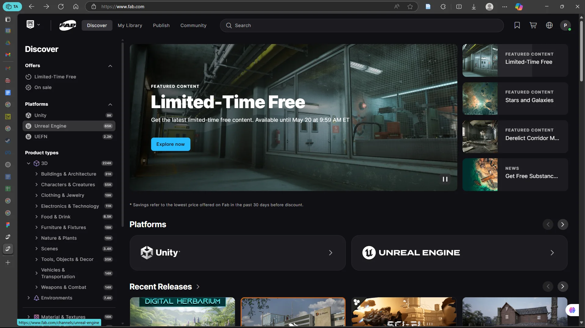
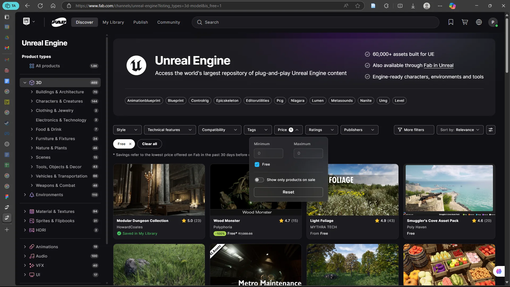
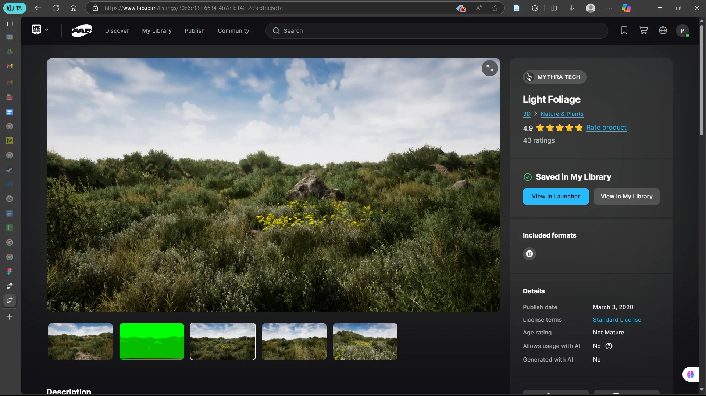
7.3Exporting Your Own 3D Models from Blender (or Similar Tools)
- Finish modeling and texturing your object.
- Merge parts that use the same material into a single mesh (when appropriate).
- Apply all transforms and modifiers.
- Go to File › Export › glTF 2.0 (.glb) (exporter options).
- In the export dialog, keep +Y Up checked (under Transform) so the object is oriented correctly, and check Apply Modifiers (under Data › Mesh).
- Save the .glb file using the naming convention.
- Save your .blend project file as well (Ctrl + S).
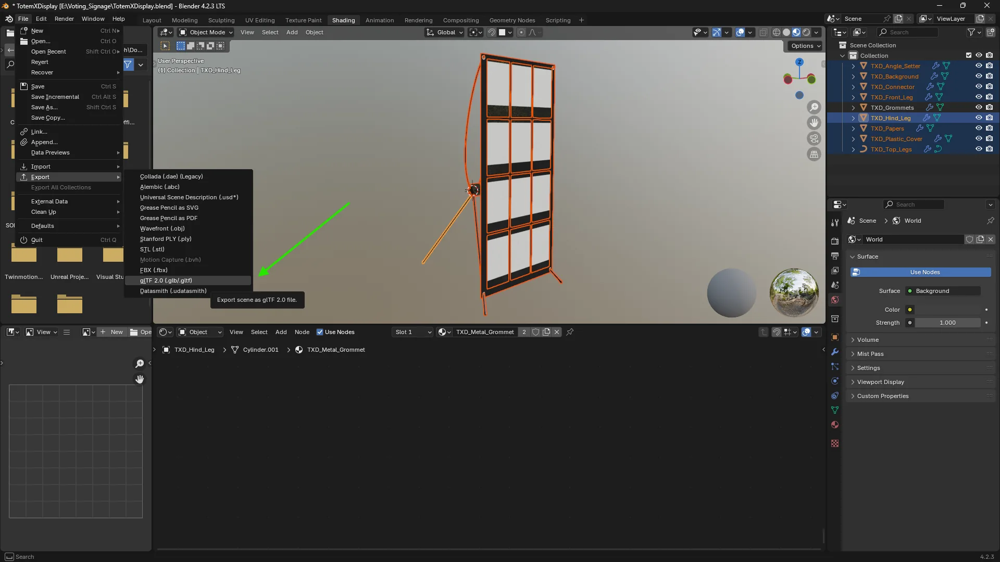
If you are designing your own assets in Blender, make sure you use consistent naming conventions for the model files, meshes, and textures before export.
Optimize your model by merging meshes that use the same material (if the object is stationary); otherwise each part arrives in UE as a separate object, adding files and clutter. Try to keep the polygon count as low as possible, and maintain a clear folder hierarchy for easy navigation later.
7.4Importing the Asset into Unreal Engine
- Open the target UE5 project.
- In the Content Browser, navigate to or create a new folder for the asset (e.g.,
Assets/Furniture/Chair_Poll_01). - Double-click to enter the folder.
- Click Import and locate your saved .glb file.
- Click Open to import.
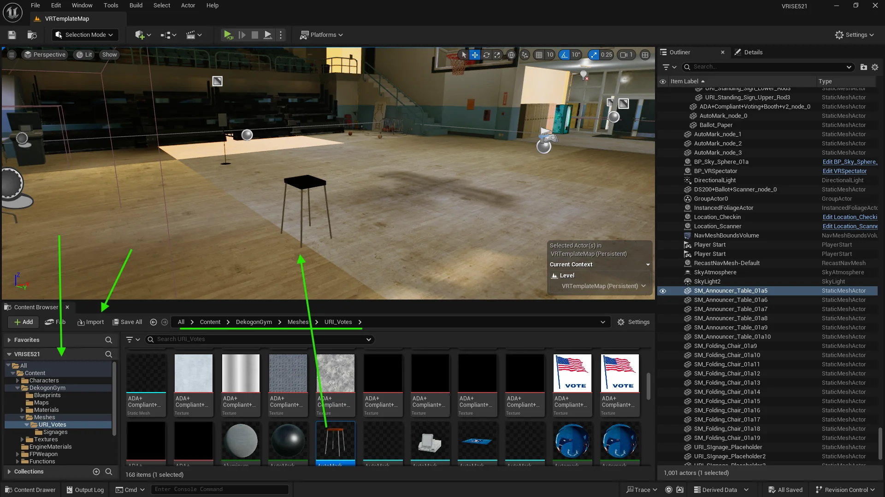
UE will automatically import meshes, textures, and materials in one go.
7.5Placing the Asset in Your Environment
- Use the search bar to quickly find specific files by name.
- Select one or more parts (use Ctrl + click for multi-select) and drag them into the scene.
Once imported, all associated files (mesh, textures, materials) will appear in the folder.
7.6Managing Assets in the Outliner Panel
Once placed, the assets appear in the Outliner panel.
In the Outliner panel, you can quickly find and select objects using the naming convention, avoid misclicks or wrong object selection in the viewport, and easily organize and group items in your scene.
Moving Signage and Objects in UE
8.1Select the Desired Object
If you still have your previous selections active, continue with them. If not:
- Hold the Ctrl key and left-click on each object you want to select.
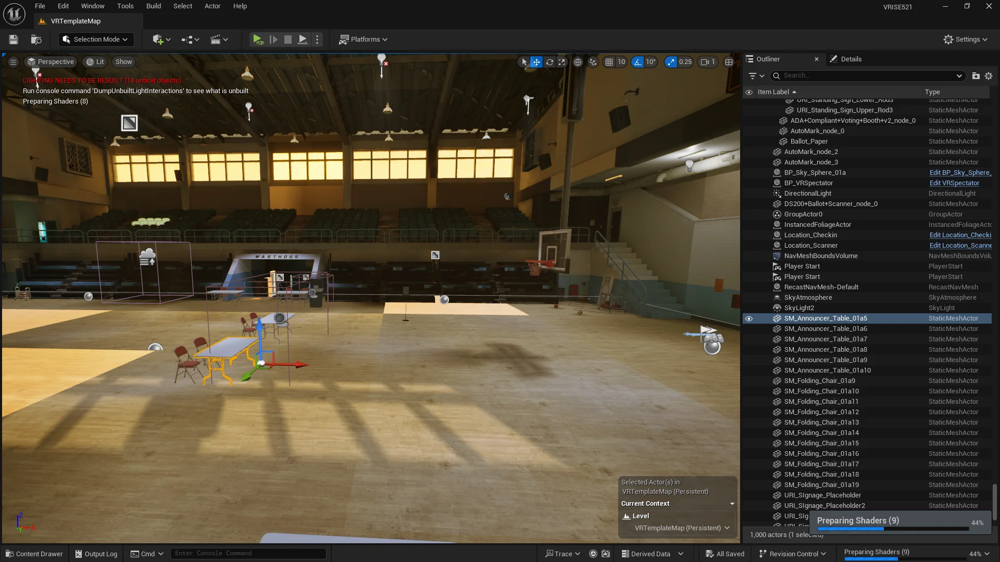
8.2Focus on the Selected Objects
- With your objects selected, move your cursor to the graphical viewport.
- Press the F key on your keyboard. This will focus the camera on your selection.
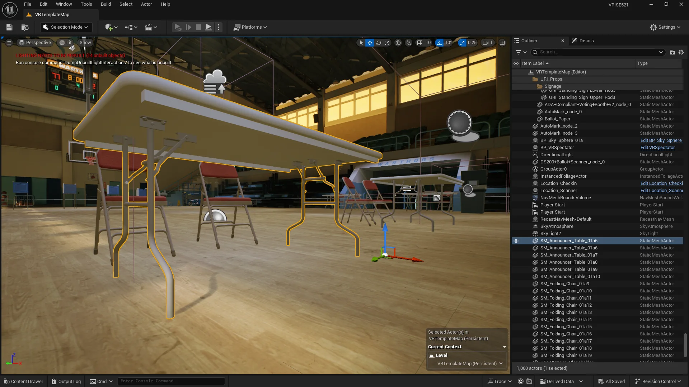
8.3Move the Objects
- Click, hold, and drag any arrow to move the object in that direction.
Once focused, you will see the translation gizmo with three arrows (red, green, and blue), each representing a direction: red = X-axis, green = Y-axis, blue = Z-axis.
8.4Switch Between Transform Modes
- In the top-right corner of the viewport, you will find icons to change the transform mode: Translation tool (move), Rotation tool (rotate), and Scale tool (resize).
- Click on the appropriate icon to switch modes.
- Click, hold, and drag the handles to rotate or scale the object in that direction.

The corresponding gizmo (also called a transform widget or manipulator) will appear. For rotation, curved handles will appear around the object; for scaling, cubes will appear along the axes.
You are now able to select and move objects around the scene!
Changing the Signage
9.1Select the Sign Board
- In the viewport, click on the sign board you want to change.
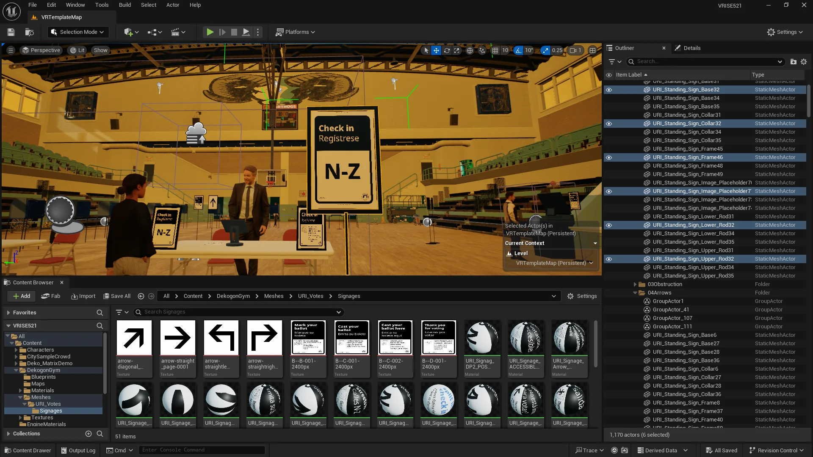
9.2Focus on the Paper Asset
- In the Outliner or directly in the viewport, select the letter-sized paper attached to the sign board.
- Press F on your keyboard to focus on the selected object.
9.3Access the Material Slot
- With the paper selected, go to the Details panel on the right.
- Look for the Materials section.
- Click on the dropdown next to the current material name.
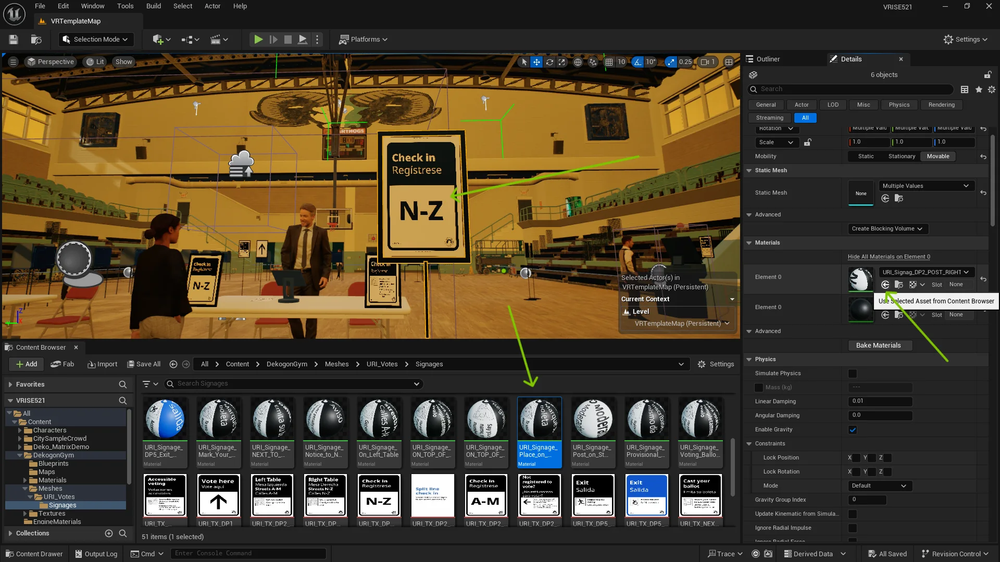
9.4Choose the New Signage
- If you remember the name of the new signage material, type it into the search bar and select it.
- If you are unsure of the name:
- Open the Content Browser.
- Navigate to the folder where signage materials are stored.
- Look at the material previews to find the correct one.
9.5Apply the New Material
Once you have selected the desired signage material in the Content Browser:
- Go back to the Details panel.
- Click the circled left-arrow icon (Use Selected Asset from Content Browser) next to the material slot.
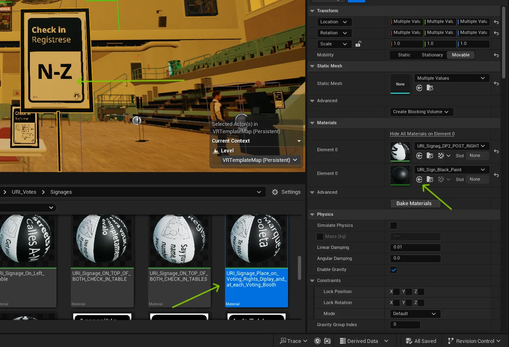
This will assign the selected material to the paper asset.
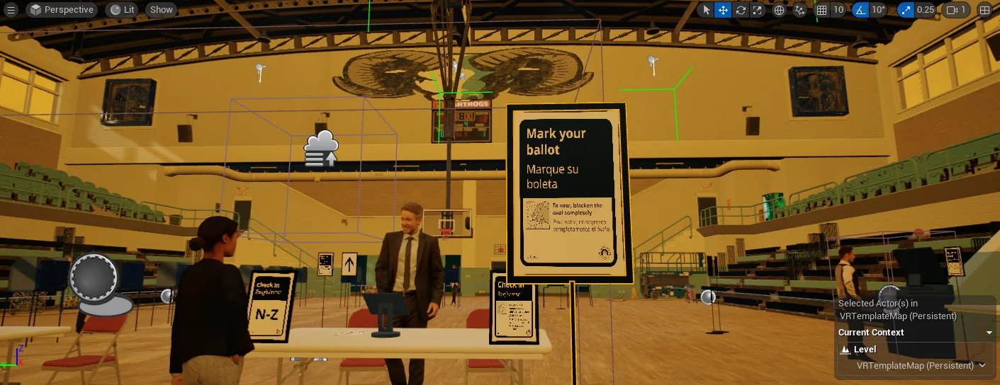
That’s it! You have successfully changed the signage on the board.
9.6Importing New Signage
- Follow the same steps listed in the asset import section (sections 7.1 to 7.6).
- Import the new signage materials into the correct folder within the Content Browser for easy access.